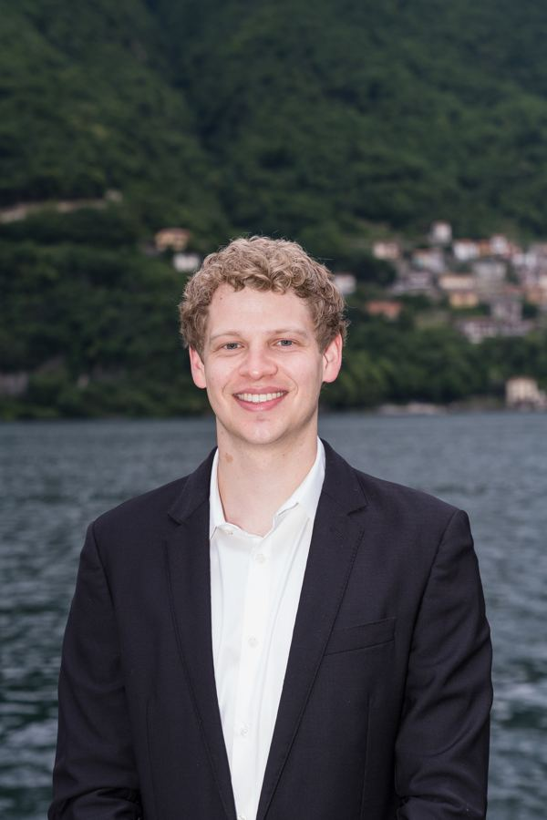

I run rigorous mixed-methods research and turn it into product decisions — trained through a PhD program in Health Behavior, applied through human-centered design projects like TABLE and EchoCare.

Slide UX Research toward either side to reveal that toolkit
// THE OVERLAP This is the combination UX research teams are short on. Plenty of researchers can run a rigorous study; plenty of designers can turn findings into something buildable. I do both — so the research I conduct becomes a sustainable solution that impacts the users I aim to serve.
Most people learn one side of this. I spent two years working in a reentry program before I ever opened a design tool — so when I run an interview, build an empathy map, or synthesize insight statements, I'm using the same methodological muscle I use in a PhD program studying opioid harm reduction.
That means my design work carries real evidence discipline: sampling logic, thematic saturation, and honest handling of what a study can't tell you yet — not just vibes from a few user interviews.
A semester-long HCD engagement with a local nonprofit, and an AI-powered digital health concept for opioid harm reduction — full process, from empathy mapping to prototype.
Four active projects spanning opioid harm reduction, implementation science, and provider health — including a scoping review at the intersection of HCD and implementation science.
Currently: drafting a scoping review on Human-Centered Design × Implementation Science, and presenting an implementation-tracking framework at SIRC 2026.